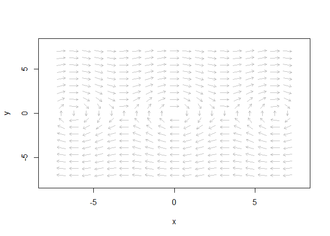
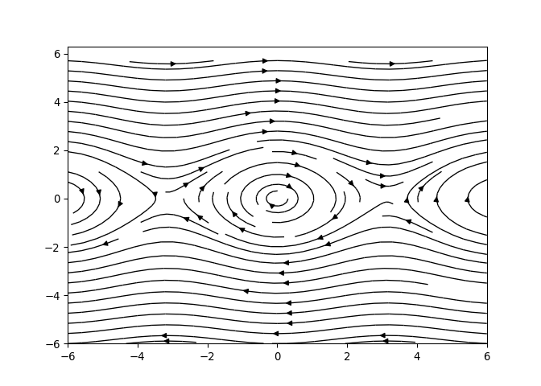

Python or R? Why not both?
Posted on Fri 22 March 2019 in Blog
Python and R. They are two of the most popular programming languages for science. They are both free, both of them have a strong user community and both of them work pretty well.
Personally, I find Python way more intuitive than R (at least for people who, like me, have a classical mathematics background). Thinking in terms of data frames is great when you work with statistical data, but it gets a bit annoying when you are more interested in analysis. To uneven the score even more, Python's libraries like NumPy, SciPy, SimPy and Matplotlib are the perfect toolbox for anyone doing mathematical research of any kind.
But... I chose R. Why?
There is only one reason for doing so: knitr[1]. knitr is a package that turns a combination of text and code (the RMarkdown file) into almost any format of human readable text, including a pdf report, slides, or a blog page like the one you are reading now. The interesting point is the integration of the code with the text. This means that an RMarkdown document is not passive. This allows one to write papers that, quite literally, recalculate themselves any time needed. knitr, combined with research code structured as an R package, is clearly my favourite way of writing research. The package structure keeps my code tidy and tested, and knitr allows me to do all and the figures the writing in a single file. The result is a rock-solid, reproducible output. Let me put it like this: knitr is like LaTeX on steroids![2]
But... I keep finding R annoying. A few days ago, after looking for hours for a nice way of ploting phase planes, I gave up. All the possibilities I found were terribly ugly. I had to go back to Python's Matplotlib and its function streamplot. See for yourself:
With R:

With Python:

After a bit of googling, I found an R library called reticulate that allows to run Python code from inside R. If this works (I thought) I can keep the best of both approaches! And, so far, it works flawlessly!
How to do it
First of all, R and Python are obviously reequired. reticulate can be installed and loaded as usual in R:
install.packages("reticulate")
library(reticulate)
For some reason I still don't fully understand, I had to add these two lines to make Matplotlib work properly.
matplotlib <- import("matplotlib", convert = TRUE)
matplotlib$use("Agg")
Now, we can insert python chunks in Rmarkdown:
```{python, eval=TRUE}
import numpy as np
x = np.pi
y = np.sin(x/4)
print(y)
```
## 0.707106781187
Interaction
reticulate works creating two different sessions, one of R and
another of Python. In order to unleash all the power of this
combination, we need a way of passing variables between both sessions.
This is done via the dataframe py. See examples below:
From R to Python
Create a variable and store it as a field of py:
```{r}
py$foo <- "Hi!"
```
The variable will be available in the Python session:
```{python}
print(foo)
```
## Hi!
From Python to R
Create a variable inside the Python session:
```{python}
bar = "How are you?"
```
The variable will be available as a field of the dataframe py in the
R session:
```{r}
py$bar
```
## [1] "How are you?"
This entry appears in R-bloggers.com
[1] Actually, there is a second (and less important) reason: Shiny.
[2] It is true that Python also has Jupyter for reproducible research, but the results are just not as neat as with R.